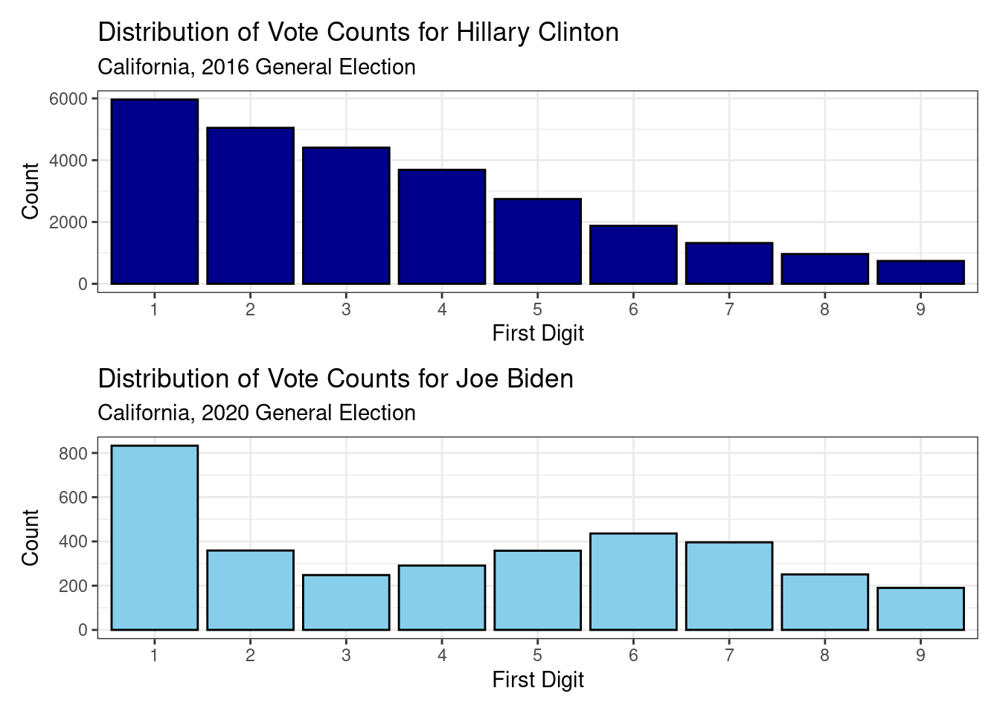

{kind=link}

Lab 3: Elections
Part I: Understanding the Context of the Data
Please record your answers on the worksheet below and upload it to Gradescope.
To help answer this worksheet, consult this snapshot of the original dataset found here.
Part II: Computing on the Data
Question 1
What is the empirical distribution of the vote counts for Ahmadinejad? Answer with:
- a plot (label your axes and provide a title),
- numerical summaries of center and spread,
- and a written interpretation.
Question 2
Create two vectors:
one with the range of values that the Benford’s Law probability distribution can take
and the second with the corresponding probabilities for each value.
Question 3
What might 366 draws (the amount of rows in the iran dataframe) from \(X \sim Benford()\) look like? Find out by sampling from the \(Benford\) probability distribution. Create a plot of the resulting empirical distribution that you collect. Label your axes and title your plot Benford’s Law Simulation.
Question 4
What do the first digit empirical distributions look like for the four candidates in the Iranian presidential election?
- Make one plot for each distribution and title them by candidate name.
- Combine the four plots into a single visualization using the
patchworklibrary.
Inside the stat20data package there is a function called get_first() that pulls off the first digit of every element in a vector. This will be helpful when creating your plots.
Question 5
How do the observed first digit distributions of Question 4 compare to the one you created in Question 3 by sampling from Benford’s Law? Which candidate has a first-digit distribution that is:
- most similar to
- most different
from the sampled one?
Question 6
Below are two visualizations using data from the last two presidential elections in California. The last two Democratic candidates for president were Joe Biden in 2020 and Hillary Clinton in 2016.
Based on these results and the results from Question 5, to what extent to you believe the 2009 Iranian election was fraudulent? Explain in three to four sentences.